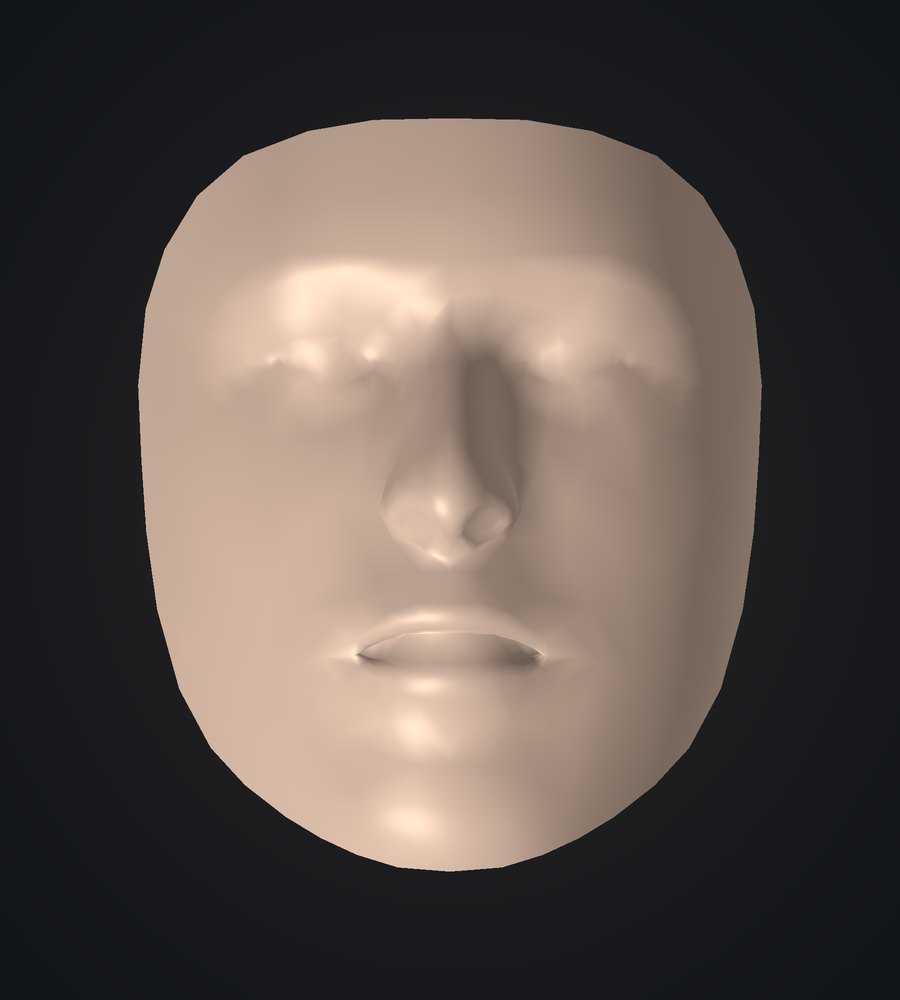

Vellure
VellureEscaneie. Simule. Encante.
O Vellure transforma o tablet ou o celular da clínica num estúdio 3D: escaneia o rosto, simula o procedimento na própria face da paciente e entrega o relatório na hora.

A paciente vê o que você está propondo
Rosto e corpo em 3D na tela do tablet ou do celular (iPad em breve). Menos imaginação, mais segurança na decisão.
 Antes | Depois
Antes | DepoisSimulação facial
Ajuste a intensidade e compare na hora.
 Malha 3D
Malha 3DEscaneamento 3D
Três fotos (frente e os dois lados) viram um modelo completo do rosto, que gira com o toque.
Glúteo • RelevoAvaliação corporal
Corpo inteiro ou só a região, com medidas e postura.
Imagens ilustrativas. As simulações não são previsão nem garantia de resultado.
Arraste e veja a diferença
No app, a profissional escolhe a região, ajusta a intensidade e mostra o resultado na face 3D da paciente, girando em qualquer ângulo. Segure o botão para voltar ao antes.
Imagens ilustrativas. A simulação não é garantia de resultado.


ANTES DEPOISDa foto à decisão em quatro passos
Sem equipamento extra. A câmera do tablet ou do celular faz o trabalho.
Escaneie
Você tira 3 fotos (frente e os dois lados), confere cada uma e o app monta o modelo 3D.
Simule
Lábios, mento, malar, mandíbula ou nariz, com o antes e o depois na própria face.
Avalie o corpo
Corpo inteiro ou só a região, com medidas, postura e simulação por área.
Entregue
Relatório em PDF com imagens, medidas e termos, com a marca da sua clínica.
Vídeo com imagens ilustrativas.
Feito para a rotina da clínica
Escaneamento guiado em 3 fotos
O app guia o ângulo de cada foto, você aprova uma a uma, e os lados do rosto ficam completos. Para quem não pode girar a cabeça, há a foto rápida de frente.
Funciona offline
O 3D e a detecção do rosto e do corpo rodam no próprio aparelho. Basta conectar uma vez por dia para confirmar a assinatura.
Dados criptografados
Fichas, fotos e modelos ficam só no aparelho da clínica.
Relatórios em PDF
Antes/depois, medidas, procedimentos e termos com a sua marca.
Equipe com login
Cada profissional com seu acesso e registro de quem alterou o quê.
Português e inglês
Troque o idioma quando quiser, já na tela de boas-vindas.
Pensado para a LGPD
Autorização da paciente, exportação e exclusão dos dados na ficha.
Quanto o Vellure pode trazer para a sua clínica?
Coloque os seus números. A conta mostra quanto fatura a mais se a simulação ajudar a fechar mais procedimentos.
Faturamento a mais por mês (estimativa)
Conta feita só com os números que você escolheu. Não é promessa de resultado.
Planos previstos para o lançamento
Escaneamento 3D, simulações, avaliação corporal e relatórios estão em todos os planos. Assinatura feita e cancelada pela loja de apps, sem fidelidade. Valores podem mudar até o lançamento.
Essencial
Trimestral R$ 790 (R$ 263/mês) • Anual R$ 2.846 (R$ 237/mês)
- 7 dias grátis para testar
- Até 2 profissionais • 1 aparelho
- Escaneamento 3D guiado (3 fotos) e foto rápida
- Simulação facial e corporal
- Avaliação corporal com medidas e postura
- Relatórios em PDF com a sua marca
Pro
Trimestral R$ 1.322 (R$ 441/mês) • Anual R$ 4.764 (R$ 397/mês)
- Tudo do Essencial
- Até 5 profissionais, cada um com login
- Até 2 aparelhos com a mesma conta da loja
- Relatório com imagens do modelo 3D (frente e lados)
- Simulações avançadas: têmporas, sobrancelhas, olheiras, sulco nasogeniano e papada
- Ajuste de cada lado do rosto separadamente
- Mapa de aplicação no rosto 3D, para planejar e mostrar à paciente
- Sem período grátis (teste pelo Essencial)
Clínica
Trimestral R$ 1.587 (R$ 529/mês) • Anual R$ 5.712 (R$ 476/mês)
- Tudo do Pro
- Até 10 profissionais, cada um com login
- Até 3 aparelhos com a mesma conta da loja
- Exclusivo: 3D com o sensor TrueDepth no iPhone e iPad (na versão Apple)
- Sem período grátis (teste pelo Essencial)
Cada aparelho guarda os próprios dados; ainda não há sincronização entre aparelhos. Precisa de mais? Fale com a gente.
Quero ser avisado| Essencial | Pro | Clínica | |
|---|---|---|---|
| Escaneamento facial 3D e foto rápida | ✓ | ✓ | ✓ |
| Simulação de procedimentos (facial e corporal) | ✓ | ✓ | ✓ |
| Avaliação corporal e relatórios em PDF | ✓ | ✓ | ✓ |
| Relatório com imagens do 3D | — | ✓ | ✓ |
| Simulações avançadas e ajuste por lado | — | ✓ | ✓ |
| Mapa de aplicação no rosto 3D | — | ✓ | ✓ |
| 3D com sensor TrueDepth (iPhone/iPad) | — | — | ✓ na versão Apple |
| Teste grátis de 7 dias | ✓ | — | — |
| Profissionais ativos | até 2 | até 5 | até 10 |
| Aparelhos | 1 | até 2 | até 3 |
No lançamento: 7 dias grátis no plano Essencial, com tudo dele liberado. A cobrança só começa depois do teste. Os planos Pro e Clínica não têm período grátis: para conhecer o app, use o teste do Essencial.
Perguntas frequentes
O Vellure já está disponível?
Ainda não. O app está em desenvolvimento e em testes. O lançamento será primeiro na Google Play (Android) e depois para iPhone e iPad, que ainda estão em desenvolvimento. Mande um e-mail para contato@vellure3d.com.br para ser avisado.
Preciso de algum equipamento?
Não. O Vellure usa a câmera do próprio tablet ou celular (iPad e iPhone em breve). Funciona bem no celular para o dia a dia; para mostrar à paciente, a tela maior de um tablet ajuda bastante.
Como é feito o escaneamento 3D?
São 3 fotos: de frente, com o rosto virado uns 30° para um lado e uns 30° para o outro. O app mostra o ângulo certo de cada uma, você toca no botão para tirar, confere a foto e aprova antes de seguir. Leva menos de um minuto. Também existe a foto rápida, só de frente, para quem não pode girar a cabeça, mas o escaneamento gera um 3D mais completo.
Funciona sem internet?
Sim, no dia a dia: o escaneamento, as simulações e os relatórios funcionam offline. A internet é usada só para confirmar a assinatura e a vaga do aparelho, e o app precisa conectar pelo menos uma vez a cada 24 horas. Tablet ou iPad com chip resolve isso em qualquer lugar.
Onde ficam os dados das pacientes?
Somente no aparelho da clínica, em banco de dados criptografado. A Vellure não recebe nem armazena dados de pacientes. Os arquivos só saem do aparelho quando a clínica exporta, gera um relatório ou faz backup.
A simulação garante o resultado?
Não. As simulações são ilustrativas e servem para alinhar expectativas. O resultado real depende da avaliação clínica, da técnica e de cada paciente.
Em quais aparelhos funciona?
No lançamento: tablets e celulares Android. A versão para iPad e iPhone está em desenvolvimento e já vem com um extra pronto: nos aparelhos com Face ID, o 3D do rosto é feito com o sensor TrueDepth, que mede a profundidade real em 3 capturas (frente e os dois lados). Exclusivo do plano Clínica.
Como cancelo?
Pela própria loja de apps, em Assinaturas, a qualquer momento. Os 7 dias grátis são do plano Essencial: cancelando antes do fim deles, nada é cobrado.
Seja avisado no lançamento
O Vellure chega em breve à Google Play. A versão para App Store (iPhone e iPad) também está em desenvolvimento. Deixe seu contato para ser avisado ou agendar uma demonstração.
Quero ser avisado → contato@vellure3d.com.br